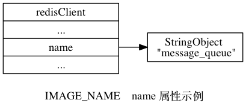
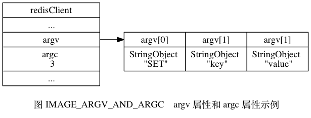
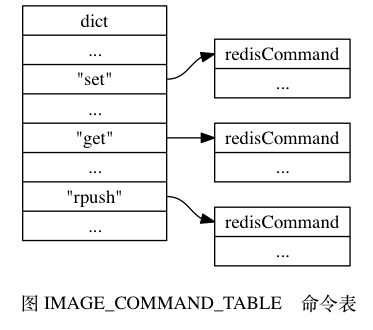
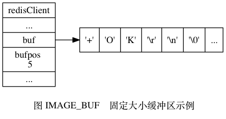
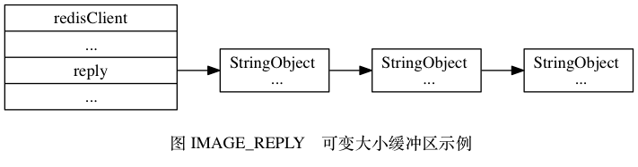
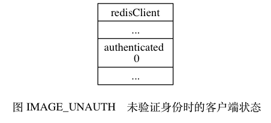
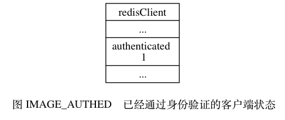

客户端属性¶
客户端状态包含的属性可以分为两类：
- 一类是比较通用的属性， 这些属性很少与特定功能相关， 无论客户端执行的是什么工作， 它们都要用到这些属性。
- 另外一类是和特定功能相关的属性，
比如操作数据库时需要用到的
db属性和dictid属性， 执行事务时需要用到的mstate属性， 以及执行 WATCH 命令时需要用到的watched_keys属性， 等等。
本章将对客户端状态中比较通用的那部分属性进行介绍， 至于那些和特定功能相关的属性， 则会在相应的章节进行介绍。
套接字描述符¶
客户端状态的 fd 属性记录了客户端正在使用的套接字描述符：
typedef struct redisClient {
// ...
int fd;
// ...
} redisClient;
根据客户端类型的不同，
fd 属性的值可以是 -1 或者是大于 -1 的整数：
- 伪客户端（fake client）的
fd属性的值为-1： 伪客户端处理的命令请求来源于 AOF 文件或者 Lua 脚本， 而不是网络， 所以这种客户端不需要套接字连接， 自然也不需要记录套接字描述符。 目前 Redis 服务器会在两个地方用到伪客户端， 一个用于载入 AOF 文件并还原数据库状态， 而另一个则用于执行 Lua 脚本中包含的 Redis 命令。 - 普通客户端的
fd属性的值为大于-1的整数： 普通客户端使用套接字来与服务器进行通讯， 所以服务器会用fd属性来记录客户端套接字的描述符。 因为合法的套接字描述符不能是-1， 所以普通客户端的套接字描述符的值必然是大于-1的整数。
执行 CLIENT_LIST 命令可以列出目前所有连接到服务器的普通客户端，
命令输出中的 fd 域显示了服务器连接客户端所使用的套接字描述符：
redis> CLIENT list
addr=127.0.0.1:53428 fd=6 name= age=1242 idle=0 ...
addr=127.0.0.1:53469 fd=7 name= age=4 idle=4 ...
名字¶
在默认情况下， 一个连接到服务器的客户端是没有名字的。
比如在下面展示的 CLIENT_LIST 命令示例中，
两个客户端的 name 域都是空白的：
redis> CLIENT list
addr=127.0.0.1:53428 fd=6 name= age=1242 idle=0 ...
addr=127.0.0.1:53469 fd=7 name= age=4 idle=4 ...
使用 CLIENT_SETNAME 命令可以为客户端设置一个名字， 让客户端的身份变得更清晰。
以下展示的是客户端执行 CLIENT_SETNAME 命令之后的客户端列表：
redis> CLIENT list
addr=127.0.0.1:53428 fd=6 name=message_queue age=2093 idle=0 ...
addr=127.0.0.1:53469 fd=7 name=user_relationship age=855 idle=2 ...
其中，
第一个客户端的名字是 message_queue ，
我们可以猜测它是负责处理消息队列的客户端；
第二个客户端的名字是 user_relationship ，
我们可以猜测它为负责处理用户关系的客户端。
客户端的名字记录在客户端状态的 name 属性里面：
typedef struct redisClient {
// ...
robj *name;
// ...
} redisClient;
如果客户端没有为自己设置名字，
那么相应客户端状态的 name 属性指向 NULL 指针；
相反地，
如果客户端为自己设置了名字，
那么 name 属性将指向一个字符串对象，
而该对象就保存着客户端的名字。
图 IMAGE_NAME 展示了一个客户端状态示例，
根据 name 属性显示，
客户端的名字为 "message_queue" 。

标志¶
客户端的标志属性 flags 记录了客户端的角色（role），
以及客户端目前所处的状态：
typedef struct redisClient {
// ...
int flags;
// ...
} redisClient;
flags 属性的值可以是单个标志：
flags = <flag>
也可以是多个标志的二进制或， 比如：
flags = <flag1> | <flag2> | ...
每个标志使用一个常量表示， 一部分标志记录了客户端的角色：
- 在主从服务器进行复制操作时，
主服务器会成为从服务器的客户端，
而从服务器也会成为主服务器的客户端。
REDIS_MASTER标志表示客户端代表的是一个主服务器，REDIS_SLAVE标志表示客户端代表的是一个从服务器。 REDIS_PRE_PSYNC标志表示客户端代表的是一个版本低于 Redis 2.8 的从服务器， 主服务器不能使用 PSYNC 命令与这个从服务器进行同步。 这个标志只能在REDIS_SLAVE标志处于打开状态时使用。REDIS_LUA_CLIENT标识表示客户端是专门用于处理 Lua 脚本里面包含的 Redis 命令的伪客户端。
而另外一部分标志则记录了客户端目前所处的状态：
REDIS_MONITOR标志表示客户端正在执行 MONITOR 命令。REDIS_UNIX_SOCKET标志表示服务器使用 UNIX 套接字来连接客户端。REDIS_BLOCKED标志表示客户端正在被 BRPOP 、 BLPOP 等命令阻塞。REDIS_UNBLOCKED标志表示客户端已经从REDIS_BLOCKED标志所表示的阻塞状态中脱离出来， 不再阻塞。REDIS_UNBLOCKED标志只能在REDIS_BLOCKED标志已经打开的情况下使用。REDIS_MULTI标志表示客户端正在执行事务。REDIS_DIRTY_CAS标志表示事务使用 WATCH 命令监视的数据库键已经被修改，REDIS_DIRTY_EXEC标志表示事务在命令入队时出现了错误， 以上两个标志都表示事务的安全性已经被破坏， 只要这两个标记中的任意一个被打开， EXEC 命令必然会执行失败。 这两个标志只能在客户端打开了REDIS_MULTI标志的情况下使用。REDIS_CLOSE_ASAP标志表示客户端的输出缓冲区大小超出了服务器允许的范围， 服务器会在下一次执行serverCron函数时关闭这个客户端， 以免服务器的稳定性受到这个客户端影响。 积存在输出缓冲区中的所有内容会直接被释放， 不会返回给客户端。REDIS_CLOSE_AFTER_REPLY标志表示有用户对这个客户端执行了 CLIENT_KILL 命令， 或者客户端发送给服务器的命令请求中包含了错误的协议内容。 服务器会将客户端积存在输出缓冲区中的所有内容发送给客户端， 然后关闭客户端。REDIS_ASKING标志表示客户端向集群节点（运行在集群模式下的服务器）发送了 ASKING 命令。REDIS_FORCE_AOF标志强制服务器将当前执行的命令写入到 AOF 文件里面，REDIS_FORCE_REPL标志强制主服务器将当前执行的命令复制给所有从服务器。 执行 PUBSUB 命令会使客户端打开REDIS_FORCE_AOF标志， 执行 SCRIPT_LOAD 命令会使客户端打开REDIS_FORCE_AOF标志和REDIS_FORCE_REPL标志。- 在主从服务器进行命令传播期间，
从服务器需要向主服务器发送 REPLICATION ACK 命令，
在发送这个命令之前，
从服务器必须打开主服务器对应的客户端的
REDIS_MASTER_FORCE_REPLY标志， 否则发送操作会被拒绝执行。
以上提到的所有标志都定义在 redis.h 文件里面。
PUBSUB 命令和 SCRIPT LOAD 命令的特殊性
通常情况下， Redis 只会将那些对数据库进行了修改的命令写入到 AOF 文件， 并复制到各个从服务器： 如果一个命令没有对数据库进行任何修改， 那么它就会被认为是只读命令， 这个命令不会被写入到 AOF 文件， 也不会被复制到从服务器。
以上规则适用于绝大部分 Redis 命令， 但 PUBSUB 命令和 SCRIPT_LOAD 命令是其中的例外。
PUBSUB 命令虽然没有修改数据库，
但 PUBSUB 命令向频道的所有订阅者发送消息这一行为带有副作用，
接收到消息的所有客户端的状态都会因为这个命令而改变。
因此，
服务器需要使用 REDIS_FORCE_AOF 标志，
强制将这个命令写入 AOF 文件，
这样在将来载入 AOF 文件时，
服务器就可以再次执行相同的 PUBSUB 命令，
并产生相同的副作用。
SCRIPT_LOAD 命令的情况与 PUBSUB 命令类似：
虽然 SCRIPT_LOAD 命令没有修改数据库，
但它修改了服务器状态，
所以它是一个带有副作用的命令，
服务器需要使用 REDIS_FORCE_AOF 标志，
强制将这个命令写入 AOF 文件，
使得将来在载入 AOF 文件时，
服务器可以产生相同的副作用。
另外，
为了让主服务器和从服务器都可以正确地载入 SCRIPT_LOAD 命令指定的脚本，
服务器需要使用 REDIS_FORCE_REPL 标志，
强制将 SCRIPT_LOAD 命令复制给所有从服务器。
以下是一些 flags 属性的例子：
# 客户端是一个主服务器
REDIS_MASTER
# 客户端正在被列表命令阻塞
REDIS_BLOCKED
# 客户端正在执行事务，但事务的安全性已被破坏
REDIS_MULTI | REDIS_DIRTY_CAS
# 客户端是一个从服务器，并且版本低于 Redis 2.8
REDIS_SLAVE | REDIS_PRE_PSYNC
# 这是专门用于执行 Lua 脚本包含的 Redis 命令的伪客户端
# 它强制服务器将当前执行的命令写入 AOF 文件，并复制给从服务器
REDIS_LUA_CLIENT | REDIS_FORCE_AOF | REDIS_FORCE_REPL
输入缓冲区¶
客户端状态的输入缓冲区用于保存客户端发送的命令请求：
typedef struct redisClient {
// ...
sds querybuf;
// ...
} redisClient;
举个例子， 如果客户端向服务器发送了以下命令请求：
SET key value
那么客户端状态的 querybuf 属性将是一个包含以下内容的 SDS 值：
*3\r\n$3\r\nSET\r\n$3\r\nkey\r\n$5\r\nvalue\r\n
图 IMAGE_QUERYBUF 展示了这个 SDS 值以及 querybuf 属性的样子：
![digraph {
label = "\n 图 IMAGE_QUERYBUF querybuf 属性示例";
rankdir = LR;
//
node [shape = record];
client [label = " redisClient | ... | <querybuf> querybuf | ... ", width = 2];
sdshdr [label = " <head> sdshdr | free \n 0 | len \n 33 | <buf> buf "];
buf [label = " { '*' | '3' | '\\r' | '\\n' | ... | 'v' | 'a' | 'l' | 'u' | 'e' | '\\r' | '\\n' | '\\0' } "];
//
client:querybuf -> sdshdr:head;
sdshdr:buf -> buf;
}](../../_images/graphviz-b81d1b60a9e0024f0a57a267563c6a9ed83dd843.png)
输入缓冲区的大小会根据输入内容动态地缩小或者扩大， 但它的最大大小不能超过 1 GB ， 否则服务器将关闭这个客户端。
命令与命令参数¶
在服务器将客户端发送的命令请求保存到客户端状态的 querybuf 属性之后，
服务器将对命令请求的内容进行分析，
并将得出的命令参数以及命令参数的个数分别保存到客户端状态的 argv 属性和 argc 属性：
typedef struct redisClient {
// ...
robj **argv;
int argc;
// ...
} redisClient;
argv 属性是一个数组，
数组中的每个项都是一个字符串对象：
其中 argv[0] 是要执行的命令，
而之后的其他项则是传给命令的参数。
argc 属性则负责记录 argv 数组的长度。
举个例子，
对于图 IMAGE_QUERYBUF 所示的 querybuf 属性来说，
服务器将分析并创建图 IMAGE_ARGV_AND_ARGC 所示的 argv 属性和 argc 属性。

注意，
在图 IMAGE_ARGV_AND_ARGC 展示的客户端状态中，
argc 属性的值为 3 ，
而不是 2 ，
因为命令的名字 "SET" 本身也是一个参数。
命令的实现函数¶
当服务器从协议内容中分析并得出 argv 属性和 argc 属性的值之后，
服务器将根据项 argv[0] 的值，
在命令表中查找命令所对应的命令实现函数。

图 IMAGE_COMMAND_TABLE 展示了一个命令表示例，
该表是一个字典，
字典的键是一个 SDS 结构，
保存了命令的名字，
字典的值是命令所对应的 redisCommand 结构，
这个结构保存了命令的实现函数、
命令的标志、
命令应该给定的参数个数、
命令的总执行次数和总消耗时长等统计信息。
当程序在命令表中成功找到 argv[0] 所对应的 redisCommand 结构时，
它会将客户端状态的 cmd 指针指向这个结构：
typedef struct redisClient {
// ...
struct redisCommand *cmd;
// ...
} redisClient;
之后，
服务器就可以使用 cmd 属性所指向的 redisCommand 结构，
以及 argv 、 argc 属性中保存的命令参数信息，
调用命令实现函数，
执行客户端指定的命令。
图 IMAGE_FETCH_IN_COMMAND_TABLE 演示了服务器在 argv[0] 为 "SET" 时，
查找命令表并将客户端状态的 cmd 指针指向目标 redisCommand 结构的整个过程。
![digraph {
label = "\n 图 IMAGE_FETCH_IN_COMMAND_TABLE 查找命令并设置 cmd 属性";
rankdir = LR;
node [shape = record];
command_table [label = " dict | ... | <set> \"set\" | ... | <get> \"get\" | ... | <rpush> \"rpush\" | ... ", width = 1.5 ];
node [label = " <head> redisCommand | ... "];
command_table:set -> set:head [style = dashed];
command_table:get -> get:head;
command_table:rpush -> rpush:head;
redisClient [label = " redisClient | ... | <cmd> cmd | ... "];
set:head -> redisClient:cmd [dir = back, label = "2) \n 设置 \n cmd \n 属性"];
find [label = "1) \n 查找 \n \"SET\" \n 对应的\n redisCommand \n 结构", shape = plaintext];
find -> command_table:set [style = dashed];
}](../../_images/graphviz-7ea6517cd7058fc421535e48338472728ff0ce3f.png)
针对命令表的查找操作不区分输入字母的大小写，
所以无论 argv[0] 是 "SET" 、 "set" 、或者 "SeT ，
等等，
查找的结果都是相同的。
输出缓冲区¶
执行命令所得的命令回复会被保存在客户端状态的输出缓冲区里面， 每个客户端都有两个输出缓冲区可用， 一个缓冲区的大小是固定的， 另一个缓冲区的大小是可变的：
- 固定大小的缓冲区用于保存那些长度比较小的回复，
比如
OK、简短的字符串值、整数值、错误回复，等等。 - 可变大小的缓冲区用于保存那些长度比较大的回复， 比如一个非常长的字符串值， 一个由很多项组成的列表， 一个包含了很多元素的集合， 等等。
客户端的固定大小缓冲区由 buf 和 bufpos 两个属性组成：
typedef struct redisClient {
// ...
char buf[REDIS_REPLY_CHUNK_BYTES];
int bufpos;
// ...
} redisClient;
buf 是一个大小为 REDIS_REPLY_CHUNK_BYTES 字节的字节数组，
而 bufpos 属性则记录了 buf 数组目前已使用的字节数量。
REDIS_REPLY_CHUNK_BYTES 常量目前的默认值为 16*1024 ，
也即是说，
buf 数组的默认大小为 16 KB 。
图 IMAGE_BUF 展示了一个使用固定大小缓冲区来保存返回值 +OK\r\n 的例子。

当 buf 数组的空间已经用完，
或者回复因为太大而没办法放进 buf 数组里面时，
服务器就会开始使用可变大小缓冲区。
可变大小缓冲区由 reply 链表和一个或多个字符串对象组成：
typedef struct redisClient {
// ...
list *reply;
// ...
} redisClient;
通过使用链表来连接多个字符串对象， 服务器可以为客户端保存一个非常长的命令回复， 而不必受到固定大小缓冲区 16 KB 大小的限制。
图 IMAGE_REPLY 展示了一个包含三个字符串对象的 reply 链表。

身份验证¶
客户端状态的 authenticated 属性用于记录客户端是否通过了身份验证：
typedef struct redisClient {
// ...
int authenticated;
// ...
} redisClient;
如果 authenticated 的值为 0 ，
那么表示客户端未通过身份验证；
如果 authenticated 的值为 1 ，
那么表示客户端已经通过了身份验证。
举个例子，
对于一个尚未进行身份验证的客户端来说，
客户端状态的 authenticated 属性将如图 IMAGE_UNAUTH 所示。

当客户端 authenticated 属性的值为 0 时，
除了 AUTH 命令之外，
客户端发送的所有其他命令都会被服务器拒绝执行：
redis> PING
(error) NOAUTH Authentication required.
redis> SET msg "hello world"
(error) NOAUTH Authentication required.

当客户端通过 AUTH 命令成功进行身份验证之后，
客户端状态 authenticated 属性的值就会从 0 变为 1 ，
如图 IMAGE_AUTHED 所示，
这时客户端就可以像往常一样向服务器发送命令请求了：
# authenticated 属性的值从 0 变为 1
redis> AUTH 123321
OK
redis> PING
PONG
redis> SET msg "hello world"
OK
authenticated 属性仅在服务器启用了身份验证功能时使用：
如果服务器没有启用身份验证功能的话，
那么即使 authenticated 属性的值为 0 （这是默认值），
服务器也不会拒绝执行客户端发送的命令请求。
关于服务器身份验证的更多信息可以参考示例配置文件对 requirepass 选项的相关说明。
时间¶
最后， 客户端还有几个和时间有关的属性：
typedef struct redisClient {
// ...
time_t ctime;
time_t lastinteraction;
time_t obuf_soft_limit_reached_time;
// ...
} redisClient;
ctime 属性记录了创建客户端的时间，
这个时间可以用来计算客户端与服务器已经连接了多少秒 ——
CLIENT_LIST 命令的 age 域记录了这个秒数：
redis> CLIENT list
addr=127.0.0.1:53428 ... age=1242 ...
lastinteraction 属性记录了客户端与服务器最后一次进行互动（interaction）的时间，
这里的互动可以是客户端向服务器发送命令请求，
也可以是服务器向客户端发送命令回复。
lastinteraction 属性可以用来计算客户端的空转（idle）时间，
也即是，
距离客户端与服务器最后一次进行互动以来，
已经过去了多少秒 ——
CLIENT_LIST 命令的 idle 域记录了这个秒数：
redis> CLIENT list
addr=127.0.0.1:53428 ... idle=12 ...
obuf_soft_limit_reached_time 属性记录了输出缓冲区第一次到达软性限制（soft limit）的时间，
稍后介绍输出缓冲区大小限制的时候会详细说明这个属性的作用。